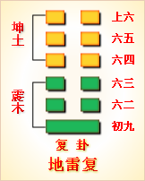
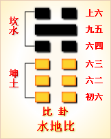

高岛易断 - 10天泽履
高岛易断 10 天泽履
"履
［52］
"者，冠履之履。篆书从尸，从彳，从舟。尸者，象人身；舟者，载也；彳者，行也。即所谓步履而行，可以运动人身者也。故此卦以此取名，《彖》辞曰"履虎尾"者是也。转而为礼，礼者，人之所践行也，故《序卦传》曰，"物畜然后有礼，故受之以履"；《大象》曰，"以辨上下"。又转为福之义，《诗》曰"福履绥之"是也。人能守礼，则天赐之以福。此卦外《乾》内《兑》，《乾》天，《兑》泽，天在上，泽居下，上下尊卑之分正，故有礼之象。又《乾》为行，《兑》为和，《论语》曰："礼之用，和为贵。"《彖》有"履虎尾"之辞，故即取其首字以名卦也。
履：履虎尾，不咥
［53］
人，亨。
▲ 篆书履
《象传》曰：履，柔履刚也。说而应乎乾，是以履虎尾，不咥人，亨。刚中正，履帝位而不疚，光明也。
此卦《乾》上《兑》下，《乾》为老父，前行，《兑》为小女，追随在后。凡以刚健践弱之后易，以柔弱践刚健之后难。就卦面《观》之，以六三一阴之柔弱，介五阳刚强之中，有欲行难行之象。以至弱之质，蹑于至刚之后，犹"履虎尾"，最是危机。文王就其难行之道，系其辞曰"履虎尾"，危之也。《乾》为虎，虎指刚健者。人者对虎而言，"不咥人，亨"。此卦二五两爻，皆得阳刚之中正，九五尊位，居至高至贵，而能不疚于心，必有光明之德也，谓之"刚中正，履帝位而不疚，光明也"。《彖传》三句，专就五爻而言，此爻卦变则为《离》，《离》为火，为日，为电，有光明之象。
以此卦拟人事，内卦《兑》为我，外卦《乾》为彼，我柔弱而彼刚健。例之古人，如上杉谦信、织田信长等，刚毅果敢，为其臣仆者，一不顺从，每遭惨祸，谚云"伴君如伴虎"，此之谓也。嗟乎！世路险阻，无往而非危机，虎之惟人，不独山林，凡一切利害所关，即为危机之所伏，皆可作虎观也。惟以不敢先之心，后天下之人，以不敢犯之心，临天下之事，以不敢轻进之心，处天下之忧患，敬以持己，和以接人，以此履虎，虎虽刚猛，必不见难。由是观之，人能行以卑逊，何往而不亨通哉！行于强暴，则强暴服，行于蛮貊，则蛮貂化，行于患难，则患难再，皆和悦之效也。以卦体言，初爻虎尾，至九五之时，危险既去，身安心泰，自具光明之德也。故履之时，柔能制刚，弱能胜强，虽刚暴难制者，皆可以柔和之道制之。若欲以刚制刚，必有大咎，此《履》卦所以贵和悦而应上也。
以此卦拟国家，上卦为政府，下卦为人民，上刚强，下卑屈，名分悬隔，刚强者进于前，卑屈者随其后，谓之履，柔履刚也。上下之秩序如此，下以和悦爱敬，服从夫上，上亦乐其柔顺，不复以强暴相凌，谓之"悦而应乎乾，是以履虎尾，不咥人，亨"。九五之君，德称其位，垂拱而天下治，上不愧祖宗之鉴临，下不负臣民之瞻仰，何疚之有？于是功业显著，德性光明，谓之"刚中正，履帝位而不疚，光明也"。
通观此卦，高者无若天，低者无若泽，上下尊卑之分，昭然若揭。六三以一阴，介在五阳之间，为全卦之主，才弱而志刚，体暗而用明，不自量力，而敢于前进，致蹈危祸也。初九在下，素位而行，不关荣誉，虽涉危险之世，行其固有之业，而自得其安乐也。九二居内卦之中，不系情于名利之途，坦然自乐，不陷于危险也。九四上事威猛之君，下接奸佞之侣，处危惧之地，小心翼翼，位尊而主不疑，权重而人不忌，终得遂其志也。九五居尊位，雄才大略，独断独行，以刚猛而御下者也。上爻熟练世故，洞悉人情，建大业，奏伟功，而克享元吉者也，是《履》之终也。
《大象》曰：上天下泽，履，君子以辨上下，定民志。
此卦"上天下泽"，尊卑贵贱之等级分明，是不易之定理也。君子见此象，"辨上下，定民志"，使之各居其所，各安其分，不相紊乱，自无僭越，礼制之要也。夫宇宙间，莫低于泽，莫高于天，譬诸在人，莫尊于冠，莫卑于履，上下之分如此。《履》者，礼也，君子体《乾》之强，庄敬而日强，所以行礼也。《兑》之德悦也，悦者和也，礼以退为让，履以下为基，故曰"履，德之基也"。天而不下交于泽，则江河无润；泽而不上交于天，则雨露无滋。惟天高而能下，故水土草木之气，蒸而为云雨，而天益高；惟君尊而能卑，故亿兆臣民之分辨，而为礼让，而君益尊。若上下不辨，民志不定，则等威无别，民情骚动，天下纷然，乱自此起，如之何其能治也？此卦上自天子，下至庶人，安尊卑之分，联上下之情，君怀明德，民无二志，天下所由治也，谓之"君子以辨上下，定民志"。
【占】 问家业：有门庭肃穆，仆妾顺从之象。
○ 问任官：有品级渐升之象，若攀援干进，反致不利。
○ 问营商：宜辨别货品，实察商情，待时而售，必得高价。
○ 问出行：利于滨海之地。
○ 问六甲：得女。
○ 问疾病：宜疏通中焦。
○ 问遗失：一时为物所掩，久后自出。
高岛易断 初九：素履，往无咎。
《象传》曰：素履之往，独行愿也。
"素"者生帛，取天然之色而无饰也。"素履"者，谓直行本分。此爻以阳居阳，虽得正位，上无正应，在下位，不援上，《中庸》所谓"君子素其位而行，不愿乎其外"者也。以居《履》之初，去虎犹远，守当然之本业，独善其身，不求闻达，一旦得位，亦不改其"素履"之守，所谓"穷不失志，达不离道"，故曰"素履，往无咎"《象传》曰"独行愿也"者，谓己之所愿，不在乎外也。此爻无正应，故曰"独"也。
【占】 问功名：宜安居乐道，待时运亨通，往无不利。
○ 问营商：直守旧业，久后必获利。
○ 问谋事：宜缓待，不宜急迫。
○ 问战征：宜独行潜往，刺探敌情，无咎。
○ 问家宅："福履绥之"，门庭吉祥。
○ 问六甲：生男。
【例】 横滨商人某氏来告曰：近来商业不振，得不偿失，欲移居于东京，别创事业，请占前途吉凶。筮得《履》之《讼》。
断曰：此卦《兑》之少女，《履》《乾》父之后，明明教人以谨守先业。商务之通塞，未可拘一时而论，物价高低，随时变换，前失后得，亦事之常，何必遽作改计？不如守旧，久必享通也，故曰"素履，往无咎"。某氏闻之，随绝改图之念，仍在横滨，从事旧业，未几而商机一变，大获利益。
高岛易断 九二：履道坦坦，幽人贞吉。
《象传》曰：幽人贞吉，中不自乱也。
"坦坦"者，道之平也；"幽人"者，谓隐居山林之士也。此爻当履之时，得刚中之位，中则不偏，不偏则不危，履行其道，犹行平坦之道路也，故曰"履道坦坦"夫行道者，履于旁则危险，履其中则平坦，必其中心淡泊，忘情荣辱，以道自守，斯得幽人之贞也，故曰"幽人贞吉"，若欲急进而从事，恐履虎而招祸也。盖此爻虽有才德，以上无应爻之助，故未得出而用世，惟其穷居乐道，遵时养晦，故吉。《象传》曰"中不自乱也"者，谓不降其志，不辱其身，是不以利达乱其心者也。一说"幽人"为幽囚之人，如文王之囚羑里而演《周易》，文天祥之囚土室而作《正气歌》之类，虽在患难，不乱其志也。此爻内卦变为《震》，《震》为大途，有道之象；又以《兑》泽，有幽谷之象，故曰"幽人"。
【占】 问功名：有高尚其志之象。
○ 问营商：一时物价平平，可得微利。
○ 问出行：平稳，获吉。
○ 问终身：有恭敬修身之意。
○ 问家宅：有分析财产之意。
○ 问失物：有意外损耗之虑。
【例】 一夕有盗入某贵显邸宅，窃去衣服若干，贵显请占盗之就捕与否，筮得《履》之《无妄》。
断回：此卦《兑》之少女，《履》《乾》父之后，老父为盗，少女者改造其藏品，或变其体裁，而转卖之，是父女共为盗者也。一时不得显露者，盗中之最狡者也。然互卦有《离》火，火之明，即探索吏也，互卦之主爻，即六三之探索吏。《象传》所谓"眇能视，不足以有明也"，故现时不能捕获；至上爻有"视履考祥，其旋元吉"之辞，自此爻至上爻，爻数五，必在五月之后，藏品暴露，盗贼即可就缚。后五月，此盗就缚，果如此占。
高岛易断 六三：眇能视，跛能履。履虎尾，咥人，凶。武人为于大君。
《象传》曰：眇能视，不足以有明也。跛能履，不足以与行也。咥人之凶，位不当也。武人为于大君，志刚也。
"眇"者，目之偏视也；"跛"者，足之偏废也。"武人"者，文官之对；"大君"者，尊贵之称。此爻以阴居阳，不中不正，无才无德，以刚暴取辱者也。盖于履为成卦之主，欲恃其势而统辖群刚，不自度才德之微，不足负担大事。目之眇，自以为能视，足之跛，自以为能履，不避危险，勇往直前，自蹈履虎受咥之祸，故曰"眇能视，跛能履，履虎尾，咥人，凶"。曰"眇"曰"跛"者，示六三之柔暗，能视履者，谓恃九二而冒险躁进。虎之不咥我，以我背后有《乾》也。六三见虎之畏《乾》，以为畏己也，去《乾》而自用，遂为虎所咥。《彖》曰"不咥人"，爻曰"咥人"，其义相反，盖《彖》取内卦《兑》之柔和爱敬而立义，爻主中正，以六三阴柔不中正，独与上九之一爻相应，上九虎之首也。履尾而首应，故有咥人之象。六三不自知其量，放肆横行，武人而干犯九五之大君，其强暴而无所忌惮如此，大凶之道也。《象传》曰"眇能视，不足以有明也；跛能履，不足以与行也"者，谓其识暗，故视不能明，谓其才弱，故行不能远。"位不当也"者，谓以阴居阳；"志刚也"者，谓其阴柔而不中正，志刚而触祸也。《兑》为毁折，互卦《离》为目，巽为股，《离》目为《兑》所毁折，有眇之象；《巽》股为《兑》所毁折，有跛之象。又《兑》为口，有咥之象；"武人"《巽》之象，《巽》之初六"利武人之贞"可见也。"武人"，武士也，如《诗》所咏"赳赳武夫"是也，其职掌专主军政，奉王命以讨伐不庭，效忠于疆场者也。"武人为于大君，"刚强自用，干犯名分，孔子所谓"暴虎冯河，死而无悔"之徒，其甚者窃弄兵权，不奉朝命，如北条义时足利尊氏者也。我国维新以来，军政严肃，海陆两军，类皆桓桓武士，干城之选，好谋而成，固不徒以志刚为武也。《易》之垂诫，或不在当时而在后世，其虑远矣。
【占】 问家宅：有暗昧不明，以小凌大之象。
○ 问商业：有被人欺弄，急切不能脱售之虑。
○ 问战征：宜退守，不宜进攻，妄动者凶。
○ 问行人：恐中途遇险。
○ 问失物：就近寻觅，自得。
○ 问六甲：生男，但婴儿防有残疾。
【例】 友人副田虎六氏，从佐贺县来告曰：某所矿山，工学士最所称赏，矿质极良，余将请政府之认可，着手采掘，请占其利害。筮得《履》之《乾》。
断曰：此卦刚健之乾父前进，柔弱之少女随后，足下继续先辈所开之矿山。今此爻以阴居阳，气强而智昏，其所计划，必有与实际相龃龉者也，故谓之"眇能视，不足以有明也"。凡商办之业，与官办之局，大异其趣。如彼矿山，固乡间无赖人所集合，能设其规则，而统制得宜，斯众人服从；且指挥众役，必用老成谙练之人，乃能成其业，若指挥不得其人，彼矿夫纷扰，非易老制，懒惰虚喝，百弊丛生。足下纵精明强干，而于矿业，究属生手，譬如行路，此程非熟悉之途，故爻辞又曰"跛能履，不足以与行也。"足下又谓"不入虎穴，焉得虎子"，是以决意担当，但恐入虎穴而为虎所咥，其危险实可寒心。爻象如是，足下宜断念也。
氏不信余占，用某学士为甲干，使之赴矿山，为不谙实业，部下不服，终以不克成事而罢。
【例】 贵族院议员某，福岛县多额纳税者也，自去年（三十一年）冬，至本年春，蚕丝输出外国者，时价益腾，本年养蚕之成绩，颇好结果，预料他日蚕丝，辐辏横滨，势必低价。乃于横滨四品取引所，期五月与六月，约卖蚕丝苦干，与买者同纳付保证金数万元于取引所。至期，蚕丝之入横滨者稀少，时价看涨，不能交现，买者知蚕丝之不足，数人联合，益倡高价，于是有介卖买两间而谋为仲裁者。某来曰："此仲裁适余意否？请为一筮。筮得《履》之《乾》。
断曰：此卦以《兑》之柔，随《乾》之刚，犹少女与暴夫同行，其危险如"履虎尾"。今占得三爻，足下测度蚕丝出产与时价，是诚以管窥天，谓之"眇能视，不足以有明也"。横滨商人，自产地贩集蚕丝，向以贷金收买，故转运往往不速，谓之"跛能履，不足以有行也"。卖者乘其虚，而益倡高价，殆将食没足下之保证金，谓之"履虎尾，咥人，凶"。足下不自揣其不能，不知卖家之不良，欲博一时巨万之利，反生大损，犹以匹夫之勇，望为武将者也。谓之"武人为于大君"今仲裁难行，过六月中旬，可得协商，然大损不免也。
后果如此占。
高岛易断 九四：履虎尾，愬愬，终吉。
《象传》曰：愬愬终吉，志行也。
"愬愬"者，畏惧之貌。此爻以阳居阴，逼近九五尊位，才强态弱，以九五为虎，常怀危惧，故有"履虎尾"之戒。若以其危故，而退身远引，亦非为臣之道。此爻处大臣之位，有可未常不献，有否未常不替，亦非避其威而不履也。但小心谨慎，常若想想，故曰"履虎尾，愬愬"。是以位虽高而主不疑，权虽重而上不忌，终免忧危，而得保全之吉，故曰"终吉"。此卦全卦以柔为吉。'终"字对初而言，有始于危，终于不危之义也。《系辞传》曰"四多得"，此爻多惧，惟其防患周密，终得免害。《彖》辞曰"不咥人，亨"者，谓此爻也。《象传》曰"志行也"者，谓履行其道也。"志"者，为平日期望之志也。
【占】 问时运：以温和接人，以笃实当事，虽临危险，终得免祸，是气运平稳之时也。
○ 问商业：不宜急切脱货，宜谨慎耐守，终获利益。
○ 问战征：宜临危固守，遇救得捷，可转败为胜。
○ 问六甲：平稳得男。
【例】 明治十七年十二月，朝鲜京城有政党纷扰，时国王遣特使来我公使馆，请我办理公使竹添君护卫王宫，公使因率兵前进。清国将官某氏，亦率部下兵迫王城，遂抗我兵。此报达我国，朝野骚然，朝旨派外务卿井上伯，奉使朝鲜责问，是国家之重事也。某贵显使余占其动静，筮得《履》之《中孚》。
断回：此卦上卦《乾》，为父，下卦《兑》为少女，有少女随父之象也，故名曰《履》。夫我国之于朝鲜，以我既行欧美之开化，欲使彼国速从时势之变迁，我导其前，彼履其后，以同行改革也。万一朝鲜为欧人所占领，不啻为我国之赘疣，实为亚细亚全洲之障碍。奈彼国冥顽不悟，妄以嫌忌外人，遂起今回之乱。今外务卿井上伯奉使前往责问，彼必自知微弱。四爻变而为《中孚》，结局终归乎和，谓之"履虎尾，愬愬，终吉"。于时十七年十二月二十五日也。
（附言）是月二十七日，交询社传福泽谕吉氏之言，邀余演说朝鲜《易》占。余因趋其席，社员满室，于事诸氏谓余曰：今回朝鲜之事，甲论乙驳，或和或战，群蹴纷纷，不如归的，君玩《易》象，必获先机，幸为开陈爻辞。余曰：《易》道，通天机而知未来者也，与凭空议论者不同也。余凭《易》占，已预知结果，在外人或未之信也。遂应其请，详述前说。在席自福泽氏以下，皆不解《易》脸如怪讶，余归后，福地源一郎氏，寄书请示占象，因更记前说以自送之，翌十八年一月一日揭之于东京《日日新闻》。当时《时事新报》记者痛嘲余说。彼昏昏者不解《易》理，亦无足怪，彼闻井上大使，与朝鲜政府开论，即在一月二日。《易》理之定数，不差分毫，余之《易》占，不失一语，不亦可畏敬哉！
高岛易断 九五：夬履，贞厉。
《象传》曰：夬履贞厉，位正当也。
夬者，决也"夬履"者，谓其一任刚决以履行也。此爻刚健中正，体《乾》卦，《履》尊位，下无应爻，自恃刚明，果于任事，多威武猛断之政，未免有果敢而窒之弊，故曰"夬履"。古圣人居天下之尊位，虽明足以照，刚足以决，势足以专，未尝不博取天下之议，以广其见识，此圣人之所以为圣人也。此爻不患不刚明，而患在躁急，一任己见，以刚行刚，不审时机，不察群情，遂致上下不通，内外阻隔，急切之甚，激成祸变，是危殆之道也，故曰"贞厉"。"贞"者，贞固也，谓固执而不变也；"厉"者，危也，谓当常存危惧之心也。《易》中用"厉"字之例皆然，《噬嗑》之九五，"贞厉无咎"，亦犹是也。盖《履》之道，尚柔不尚刚，九五以刚居刚，是决于履也；以其中正之德，又能危厉自惕，斯得动无过举。《书》曰"心之忧危，若蹈虎尾"，国君能常思蹈虎之危，可谓"履帝位而不疚"也。爻辞"贞厉"者，固见其厉也。《象传》曰"位正当也"者，与《兑》之九五及《中孚》之九五同义。盖有不满于君德之旨也，谓刚决之君，似于宽仁温和之德有阙，所宜反省而加勉也。
【占】 问时运：前苦后甘，目下正当披云见日之时，犹宜毋忘曩时苦境，兢兢业业，斯能长保其富也。
○ 问商业：宜和衷共济，有货不宜急售，久后必得厚利。
○ 问失物：有不待寻而自得之象。
○ 问官途：目下已得升迁，惟宜谨慎，斯可永保。
○ 问疾病：危而后安。
【例】 某会社社长，来占命运之吉凶，筮得《履》之《睽》。
断曰：此卦以《兑》之少女，继《乾》父之后。今君富学识，温和而长于交际，由株主迁举而为社长，地位中正，固无可疑。但既任职权，不能不竭力谋事，一或刚决独行，凡事难保无失，谓之"夬履，贞厉"。在足下精明果敢，胜任社长，固余所深信也，惟从占筮之意，尚宜时时警戒。劝足下注意而已。
后果如此占。
高岛易断 上九：视履，考
［54］
祥其旋
［55］
，元吉。
《象传》曰：元吉在上，大有庆也。
"视履，考祥其旋"者，谓自视其履行之迹，能考祸福之祥兆。此爻居《履》之终，即践行之终，凡人之所践行，善则得福，不善则得祸，治乱祸福之所歧，悉由于履行。人之所履，亦难保始终皆善，有始不善而终善者，有始善而终不善者，必观于终，然后见也。若周旋无亏，终始如一，则其吉大矣，故曰"视履，考祥其旋，元吉"。《象传》曰，"元吉在上，大有庆也"。谓君上能行此道，则大有吉庆也。元即大，吉即庆也。凡六十四卦之中，上爻系"元吉"者，不过二三卦，此爻居其一，盖上爻者，极地而多危殆也。
【占】 问时运：目下正得安乐之时，其人必素行无亏，晚运亨通，福寿双全，大吉也。
○ 问商业：往返经营，俱得大利。
○ 问家宅：祸福无门，惟人自招，若能积善，必有余庆。
○ 问疾病：恐天年有限。
○ 问失物：不寻自得。
○ 问六甲：必产贵子。
○ 问战征：大获胜捷，奏凯而旋。
【例】 明治二十三年十月，东京府下第十五区选举，代议士有候补三名，其一人为某豪商也。一日友人某氏，来请占其成否，筮得《履》之《兑》。
断曰：此卦以《兑》柔弱之少女，随行《乾》刚之老父，其势不相匹敌，固不待论。《履》之上九，《履》之终也，必其人经履几多艰难危机，渐奏事功，以至今日之盛运也。然应不中不正之六三，依偏视之眇者，与偏废之跛者，与刚猛之武人，共相竞争，孙子所谓下驷与上驷，其不能必胜可知矣。上爻处位之极，无可复进，悟前非而鉴既往，翻然回头，可得大吉也。若谋不出此，欲强遂初志，其凶有不可言也。
后依所闻，某豪商果察机自退，不复与争云。
【例】 明治三十年，占我国与德国交际，筮得《履》之《兑》。
爻辞曰"上九：视履考祥其旋，元吉。"断曰：《履》者以柔顺而履刚健之迹，有周旋无亏之象，故名此卦曰《履》。曰"履虎尾，不咥人，亨"，以柔蹑刚，恭顺而不失其正，故不见咥，而反见亨也。见之本年我国与德国交际，彼国夸其武威，非无虎视耽耽之意，然我国当路之重臣，处置得宜，且彼国驻劄公使得人，能两得平和，故彼此无事。博强国之称，比之从前交际，自然不同。在彼具猛虎之性，搏噬之志，固未尝一日忘也；且因我之强，亦不无嫉妒。在我惟宜以柔克刚，随时应变，斯得矣。
周易 - 10天泽履

|
 |

|
 |
| 本卦 | 互卦 | 错卦 | 综卦 |
周易第10卦_履卦(天泽履)_乾上兑下
周易第十卦详解
履卦原文
履。履虎尾，不咥人，亨。
象曰：上天下泽，履。君子以辨上下，定民志。
白话文解释
履卦：踩着虎尾巴，老虎不咬人，吉利。
《象辞》说：本卦上卦为乾，为天，下卦为兑，为泽，上天下泽，尊卑显别，这是履卦的卦象。君子观此卦象，从而分别上下尊卑，使人民循规蹈矩，安份守纪。
《断易天机》解
履卦乾上兑下，为艮宫五世卦。履为履行之意，又寓意礼，提示占筮者要兢兢戒惧，遵守礼节，这样才有惊无险。
北宋易学家邵雍解
步履不安，困难危险；谦虚自重，敬慎事主。
得此卦者，困难时期，多坎坷不顺，万事不宜急进，须循序渐进，谨慎行事。
台湾国学大儒傅佩荣解
时运：依序升进，不可攀缘。
财运：明察货品，待时而售。
家宅：门庭严整。
身体：疏通气血。
传统解卦
这个卦是异卦（下兑上乾）相叠，乾为天，兑为泽，以天喻君，以泽喻民，原文："履（踩）虎尾，不咥（咬）人"。因此，结果吉利。君上民下，各得其位。兑柔遇乾刚，所履危。履意为实践，卦义是脚踏实地的向前进取的意思。
大象：柔弱遇刚强，欲行却难行之象，难且危也。
运势：先劳而后逸，始惊而后安，百事不宜急进，须以和待人，有惊无险。
事业：起初很不顺利，受到种种威胁，若能提高警惕，谨小慎微，脚踏实地，逐个地去克服困难，不改变自己的决心，一定可以达到目的。办事有自知之明，务必量力而行，不可不顾实际，尤其不得逞强，急于求成。
经商：宜待观动静，勿为小利而动摇自己计划，尤其不得贪得无厌，遵循商业道德，了解全面信息。
求名：务必有恒心，孜孜以求，不为财富利诱，不为世俗干扰，坚持自己的志向和理想，可以取得成功。
婚恋：双方安贫乐道，可和睦相处，若一方为富贵所动，会发生婚变。
决策：诸事必须小心慎重，不利的情况经常会出现，但若能处理得好，总会是有惊无险，化险为夷。为此，办事必须认认真真，遵循正道，虚心听取别人的建议，量力而行，切莫自负逞强，一定会有好的结果。
第十卦
的哲学含义：
履卦，这个卦是异卦相叠，下卦为兑，上卦为乾。乾为天;兑为泽，以天喻君，以泽喻民。君上民下，各得其位。
从卦像上看，履卦是兑下乾上。乾刚健，才德无比，这正是兑所不能及的。
从卦形我们还能看出，乾为天在上，兑为泽在下，这意味着天在下雨，地则把雨水汇集为泽。这是顺乎自然、合乎事物存在和发展规律的。所以在学习和实践之中，还要遵循自然的规律。
履卦是兑下乾上，传统称作天泽履。这一卦的卦形，恰好与"小畜"上下相反。彼此是相对卦，一停一进交互为用。《序卦传》说："物畜然后有礼，故受之以履。履者，礼也。"这是说，物资蓄积后，就要制定礼节，将"履"解释为"礼"。"礼"与"履"同音，"礼"必须人来履行，所以这样解释。
在易经之中，履这一卦主要是践履、履行的意思。《杂卦》说："履，不处也。"履是行进而不停留。《说文》中指出："履，足所依也。"履是脚上穿的鞋子。综上所述，履的本义是鞋子，引伸为践履，履进，礼节。古人认为，人的行动要受到礼的节制，不然就会乱来，故履有该怎样行动的意思，这就是礼。
履卦与小畜互为综卦，这两卦的卦爻结构都是一阴对五阳，但是小畜卦的六四以阴居阴，当位得正，柔顺利贞，能够蓄止刚势力前进的势头，而履卦的六三以阴居阳，本身也带有一事实上的刚性，由此而形成的态势就不是如同小畜卦那样的以柔软蓄刚，而是以刚遇刚了。
履卦的智慧之象，有笠，成立义;文书破，损义;女子乃好，有伞有所庇盖;卓旗官人边坐，门旗义;堠上有千里字，坐镇千里之侯伯。
周易第十卦初九爻详解
初九爻辞
初九。素履，往无咎。
象曰：素履之往，独行愿也 。
白话文解释
初九：以朴素坦白的态度处世，没有灾害。
《象辞》说：以朴素坦白的态度处世，是说能独行其志愿。
北宋易学家邵雍解
平：得此爻者，营谋有计，则财利日增。做官的若修德养身，则有升迁之机。
台湾国学大儒傅佩荣解
时运：等待时机，自有成就。
财运：守好旧业，久必获利。
家宅：门庭吉祥。
身体：精神勤奋。
初九变卦
初九爻动变得周易第58卦：兑为泽。这个卦是同卦（下兑上兑）相叠，兑为泽、为悦，两泽相连，两泽交流，喻人上下相敬，谦恭以待，礼节上周到，互相爱悦。
初九爻
的哲学含义：
素：质朴无文曰"素"，持守本性曰"素"。"履"指鞋，也指出行。因此"素履"相应有两层意思：一是素鞋，代指身份，荀爽曰："素履者，谓布衣之士"。二是素行，直行，即坚守自己的信条，率本性而为，喻指行为清正纯洁。
从卦象上看，初九是阳爻居于刚位，在最下位，象征有才能，却甘心情愿安于低下的地位。这是踏步前行的第一步，还不曾被富贵诱惑，仍然本着自己平素的志向前进，所以不会有过失。
《象》曰：素履之往，独行愿也。这里的"独"，是指特立独行，不随世俗，独行其志，而不是为了利益。这一爻说明实践理想、履行责任，应当一本初衷，特立独行不同流合污。
占得此卦者，在为人做事方面，可以依自己的志向去行事，不图任何利益。就像是刚毕业的学生一样，虽然很有才能，但是因为刚参加工作，还要从低处做起，不去计较眼前的得失，不为外界的诱惑所动，独行守常理，为日后的发展打下基础。
从卦象上看，九二位下卦之中，直道中行，以实才干事。但是其属于阳爻居于阴位，失位。从卦中所看九二的处境，可以说是进而有碍，强行有忧。以幽处守志为吉，幽处非无所作为，而是深自砥砺，不断增益。
《象》曰："幽人贞吉"，中不自乱也。意思是说，"幽居的人可获吉祥"，说明自己内心平静自然毫不紊乱，循礼仪而行的信念坚固。
占得此卦的人，可能所处的形势对你不利，不能一展才华，大施身手，但是，可以趁这个机会来磨炼自己，比如清代富商胡雪岩在年轻时，因帮助朋友而被辞退在家，无事可做时，他就开始练习算盘，学习记账。他这就是在为以后的发展打基础。占得此卦者，可以趁这个机会学习知识，独善其身，增强自己的能力。
九二与九五爻不相应，所以得不到九五的支持，可是他能够居中守正，并且做事提前做好谋划，虽然不得位也会吉祥。大大方方走在平坦的大道上，可是内心却早已把应对各种危险的方法考虑周全了，怎么会不吉祥呢?这就好比拿破仑所说，作为一名合格的将领，应当随时考虑好发生意外时的解决办法。这位世界军事奇才正是在平时养成了战略部署习惯，所以他才能够成为常胜将军。
"九二"阳刚得中，似心怀坦荡的隐士，执者纯正，不求闻达，不被世俗所扰，当然吉祥。
周易第十卦九二爻详解
九二爻辞
九二。履道坦坦，幽人贞吉。
象曰：幽人贞吉，中不自乱也。
白话文解释
九二：行道之人，胸怀坦荡；隐居之人，长逢吉兆。
《象辞》说：隐居之人洁身守正，因为他们秉性中正，不被世俗所惑。
北宋易学家邵雍解
平：得此爻者，安然自乐，修身养性。做官的会有全身而退之兆。
台湾国学大儒傅佩荣解
时运：高尚其志，修身以道。
财运：物价稳定，稍有小利。
家宅：分析财产，小心损耗。
身体：保养眼睛。
九二变卦
九二爻动变得周易第17卦：泽雷随。这个卦是异卦（下震上兑）相叠。震为雷，为动；兑为悦，动而悦就是"随"。随指相互顺从，己有随物，物有随己的情况。
九二爻
的哲学含义：
从卦象上看，九二位下卦之中，直道中行，以实才干事。但是其属于阳爻居于阴位，失位。从卦中所看九二的处境，可以说是进而有碍，强行有忧。以幽处守志为吉，幽处非无所作为，而是深自砥砺，不断增益。
《象》曰："幽人贞吉"，中不自乱也。意思是说，"幽居的人可获吉祥"，说明自己内心平静自然毫不紊乱，循礼仪而行的信念坚固。
占得此卦的人，可能所处的形势对你不利，不能一展才华，大施身手，但是，可以趁这个机会来磨炼自己，比如清代富商胡雪岩在年轻时，因帮助朋友而被辞退在家，无事可做时，他就开始练习算盘，学习记账。他这就是在为以后的发展打基础。占得此卦者，可以趁这个机会学习知识，独善其身，增强自己的能力。
九二与九五爻不相应，所以得不到九五的支持，可是他能够居中守正，并且做事提前做好谋划，虽然不得位也会吉祥。大大方方走在平坦的大道上，可是内心却早已把应对各种危险的方法考虑周全了，怎么会不吉祥呢?这就好比拿破仑所说，作为一名合格的将领，应当随时考虑好发生意外时的解决办法。这位世界军事奇才正是在平时养成了战略部署习惯，所以他才能够成为常胜将军。
"九二"阳刚得中，似心怀坦荡的隐士，执者纯正，不求闻达，不被世俗所扰，当然吉祥。
周易第十卦九三爻详解详解
六三爻辞
六三。眇能视，跛能履。履虎尾，咥人，凶。武人为于太君。
象曰：眇能视，不足以有明也。跛能履，不足以与行也。咥人之凶，位不当也。武人为于大君，志刚也。
白话文解释
六三：瞎了眼睛却要看物，跛了脚却要行走，这是勉为其难，犹如踩着虎尾巴，终将为虎所伤。这是凶险之事。武人纂夺国政，同样是凶险之事。
《象辞》说：瞎了眼睛却要看物，其视力不足以辨物。跛了脚却要行走，其脚力不足以行路。老虎之所以伤人，因为六三阴爻而居于阳位，所处不当。武人纂夺国政，这是僭越犯上，以六三之位而行九五之志，必遭祸殃。
北宋易学家邵雍解
凶：得此爻者，会有争诉，囚狱之扰，甚者家破人亡。做官的则会有被贬职之祸。
台湾国学大儒傅佩荣解
时运：退守为宜，妄动则凶。
财运：被人欺弄，货物滞销。
家宅：暗昧不明，以小凌大。
身体：保养眼睛与脚部。
六三变卦

六三爻动变得周易第1卦：乾为天。这个卦是同卦（下乾上乾）相叠。象征天，喻龙（德才的君子），又象征纯粹的阳和健，表明兴盛强健。乾卦是根据万物变通的道理，以"元、亨、利、贞"为卦辞，表示吉祥如意，教导人遵守天道的德行。
九三爻
的哲学含义：
六三这一爻辞告诉人们的道理就是：莫逞匹夫之勇。
从卦象上看，六三这一爻属于阴爻居于阳位，失位而且不居中。阴爻代表能力很弱，只宜顺守，不宜盲目亢进追随诸阳去冒险。
占得此卦者，切忌逞强，要安守本分，只做力所能及的事情。也不要过于悲观，你的处境还不是最坏，就像眼睛虽然有毛病，但是不影响看东西，腿脚有毛病，但是还能行走一样。这种时候，可选力所能及的事情来做，以避免凶险。
六三爻是履卦的唯一一个阴爻，可是它却没有小畜的唯一的阴爻运气好。为什么呢?因为首先它阴爻居于奇位，既不得位又不居中;其次，它凌驾于两个刚爻之上，以柔乘刚自然得不到下面阳爻的拥护。所以这个六三爻就像瞎了一只眼的人看东西，跋了一条腿还要走路一样，是不会走得长远的。所以会凶险。六三虽然也想统治五个阳爻，但却像武士想当天子一样可笑。这句受辞是告诫人们，自己的目标要与自己的能力及所处的地位相适宜，否则，只能是招致凶险。
周易第十卦九四爻详解详解
九四爻辞
九四。履虎尾，愬愬，终吉。
象曰：愬愬终吉，志行也。
白话文解释
九四：踩着虎尾巴，但能遇险知惧，最后仍吉利。
《象辞》说：恐惧警惕，终归于吉，说明虽历磨难，但志愿得行。
北宋易学家邵雍解
平：得此爻者，会有危险，宜温和自持，可免灾祸。做官的会有虎符将帅之兆。读书人将会取得不错的佳绩。
台湾国学大儒傅佩荣解
时运：温和笃实，终可免祸。
财运：不急求售，终获利益。
家宅：平稳持家。
身体：谨慎走路。
九四变卦

九四爻动变得周易第61卦：风泽中孚。这个卦是异卦（下兑上巽）相叠。孚本义孵，孵卵出壳的日期非常准确，有信的意义。卦形外实内虚，喻心中诚信，所以称中孚卦。这是立身处世的根本。
九四爻
的哲学含义：
从卦象上看，九四处于上卦乾的下位，紧挨着九五君主的位置，九四为近君大臣，有尾随虎君之象。但是，九四又表现出极为驯服，心怀恐惧之象。
《象》曰："恝恝终吉"，志行也。这句话的意思是说，"感到恐惧害怕，但谨慎小心，终久获得吉祥"，说明小心遵循礼仪而行就能实现自己的志愿。
占得此卦的人，在做事和与人交往时，要有步履薄冰的感觉，小心谨慎，就能度过危险，而迎得圆满的结果。
九四位于九五君位之下，所以也会犯些错误——履虎尾，不过九四能够以恐惧之心对待这件事，明白自己的过失，内心反省，更加谨慎行事，所以最终吉祥。
"九四"不中不正而近君，有踩虎尾的危险。但居阴位，能恐惧小心地走在虎后，终会吉祥。
周易第十卦九五爻详解详解
九五爻辞
九五。夬履，贞厉。
象曰：夬履贞厉。位正当也。
白话文解释
九五：行为急躁莽撞；卜其行事有危险之象。
《象辞》说：行为急躁莽撞，卜其行事有危险之象，但九五阳爻居上卦中位，正当其位。因而虽险不凶。
北宋易学家邵雍解
凶：得此爻者，躁动妄行者，则祸患将至，甚者有性命之忧。做官的会功高盖主，而不赏。
台湾国学大儒傅佩荣解
时运：拨云见日，勿忘艰苦。
财运：和衷共济，惜售有利。
家宅：居安思危，可保平安。
身体：由危转安。
九五变卦

九五爻动变得周易第38卦：火泽睽。这个卦是异卦（下兑上离）相叠。离为火；兑为泽。上火下泽，相违不相济。克则生，往复无空。万物有所不同，必有所异，相互矛盾。睽即矛盾。
九五爻
的哲学含义：
从卦象上看，九五这一爻属于阳爻居于刚位，居中守正。其处于上卦乾的中心，阳气很盛，从全卦来看，没有爻位与其正应，就像各各在上的皇帝一样，拒人于千里之外，如此骄妄，十分凶险。
《象》曰："夬履贞厉"，位正当也。这句话是告诫人们，"刚毅果断，小心行动，要提防危险"，说明此时虽处于正当的位置，但也不能疏忽大意。
九五这一爻，是处于君王之位。所以若是占得此卦者，可能会是领导，但是身为领导，不可一意孤行，刚愎自用。在做事时，不可贸然前行，不顾一切。过于快捷果断地向前推进，有时会可能损害他人的自尊或利益，也使人看不清前面的危险和陷阱，会遇到麻烦的。
占得此卦的人，在做任何事之前，要反复考虑，不要突然做出决断，决然而行或行为莽撞急躁，将会有危险。
身为九五之尊，如果不懂得行使自己的权力去解决困境，后果肯定是不堪设想。与其被排挤走，不如用"夹屨"来改善处境。
"九五"中正，刚断果决。但以刚居刚，独断独行，前途凶险。所以必须循礼果决，但这样也难免有危难。
周易第十卦上九爻详解详解
上九爻辞
上九。视履考祥，其旋元吉。
象曰：元吉在上，大有庆也。
白话文解释
上九：行为审慎，遇事周密反复地考虑，大吉。
《象辞》说：大吉大利，因为上九之爻居全卦之首。预兆其人将有重大喜庆之事。
北宋易学家邵雍解
吉：得此爻者，财利可获。做官的宜退而以享安静和平之福。读书人努力者可获佳绩。
台湾国学大儒傅佩荣解
时运：晚运亨通，福寿双全。
财运：往来经营，无不有利。
家宅：积善之家才有余庆。
身体：天年有限。
上九变卦
上九爻动变得周易第58卦：兑为泽。这个卦是同卦（下泽上泽）相叠。泽为水。两泽相连，两水交流，上下相和，团结一致，朋友相助，欢欣喜悦。兑为悦也。同秉刚健之德，外抱柔和之姿，坚行正道，导民向上。
上九爻
的哲学含义：
履卦第六爻爻辞释义
视：察看，审视。视履，审察一下走过的路。考祥：全面仔细地考虑。旋：反复，返回。
这句爻辞的意思是：回头看看走过的路，详细察看一下吉凶祸福，反身自省，这样是吉祥的。
从卦象上看，上九属于阳爻居于柔位，谦虚柔顺，德才兼备。其处于履卦的最上端，象征着跟君主做过事，但是现在是退休的开国元老。其安心回家，反省自己的经历，总结经验，大吉大利。
能够时刻检查自己的行为，改掉缺点，发扬优点，这种习惯自然会使人生减少失误，所以会吉祥。这正如孔子所说："吾日三省吾身。"能做到这一点，一生就会有大的收获，有大的成就。所以象辞中说"大有庆"也。